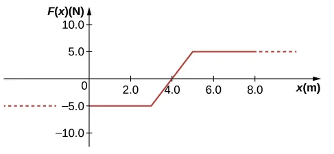

B5.X Problems#
Problem B5.1
A force \(f_x = (-5.0x^2 + 7.0x)~\textrm{N}\) acts on a particle. How much work does the force do on the particle as it moves from x = 2.0 m to x = 5.0 m?
This problem is a slightly modified version from OpenStax. Access for free at https://openstax.org/books/university-physics-volume-1/pages/8-problems
# DIY Cell
Problem B5.2
A particle of mass 2.0 kg moves under the influence of the force \(f_x = (-5.0x^2 + 7.0x)~\textrm{N}\). If its speed at x = -4.0 m is 20.0 m/s, what is its speed at x = 4.0 m?
This problem is a slightly modified version from OpenStax. Access for free at https://openstax.org/books/university-physics-volume-1/pages/8-problems
# DIY Cell
Problem B5.3
A 4.0-kg particle moving along the x-axis is acted upon by the force whose functional form appears below. The velocity of the particle at x = 0.0 m is 6.0 m/s. Find the particle’s speed at x = (a) 2.0m, (b) 4.0m, (c) 10.0m,(d) Does the particle turn around at some point and head back toward the origin? (e) Repeat part (d) if at x = 0.0 m the velocity is 2.0 m/s.
This problem is a slightly modified version from OpenStax. Access for free at https://openstax.org/books/university-physics-volume-1/pages/8-problems
# DIY Cell
Problem B5.4
A particle of mass 2.0 kg moves under the influence of the force \(f_x = (-5.0x^2 + 7.0x)~\textrm{N}\). Suppose a frictional force also acts on the particle. If the particle’s speed when it starts at x = -4.0 m is 0.0 m/s and when it arrives at x = 4.0 m is 9.0 m/s, how much work is done on it by the frictional force between x = -4.0 m and x = 4.0 m?
This problem is a slightly modified version from OpenStax. Access for free at https://openstax.org/books/university-physics-volume-1/pages/8-additional-problems
# DIY Cell
Problem B5.5
A particle is subject to a net force shown on the graph below.
Find the kinetic energy transfer to/from the particle due to this net force.
If the particle has a mass of 0.50 kg and is at rest at x = 0 m, what is its speed at x = 10 m?
What is its speed at x = 3 m?
Show code cell source
import numpy as np
import matplotlib.pyplot as plt
%matplotlib inline
t1 = np.arange(0,4.1,0.1)
f1 = -5.0 + 5.0*t1
t2 = np.arange(0,3.1,0.1)+4.0
f2 = np.zeros(len(t2))+15
t3 = np.arange(0,3.1,0.1)+7.0
f3 = 15 - (5/3)*(t3-7)
plt.figure()
plt.ylabel('$f_x$ (N)')
plt.xlabel('Position (m)')
ax = plt.gca()
ax.plot(t1,f1,'-',color='b')
ax.plot(t2,f2,'-',color='b')
ax.plot(t3,f3,'-',color='b')
ax.set_xlim([0, 10])
ax.set_ylim([-5, 20])
ax.grid()
plt.show()
# DIY Cell
Problem B5.6
A bungee cord exerts a nonlinear elastic force of magnitude \(f_x = k_{1}x + k_{2}x^3\), where x is the distance the cord is stretched, \(k_1\) = 204 N/m and \(k_2\) = −0.233 N/m\(^3\). How much work must be done on the cord to stretch it 16.7 m?
This problem is a slightly modified version from OpenStax. Access for free at https://openstax.org/books/university-physics-volume-1/pages/7-problems
# DIY Cell
Problem B5.7
When a \(3.0\) kg block is pushed against a massless spring of force constant \(4.5\times 10^3\) N/m, the spring is compressed \(8.0\) cm. The block is released, and it slides \(2.0\) m (from the point at which it is released) across a horizontal surface before friction stops it. What is the coefficient of kinetic friction between the block and the surface?
This problem is a slightly modified version from OpenStax. Access for free at https://openstax.org/books/university-physics-volume-1/pages/7-problems
# DIY Cell
Problem B5.8
A \(5.00\times 10^5\) kg subway train is brought to a stop from a speed of 0.500 m/s in 0.400 m by a large spring bumper at the end of its track. What is the spring constant k of the spring?
This problem is a slightly modified version from OpenStax. Access for free at https://openstax.org/books/university-physics-volume-1/pages/8-problems
# DIY Cell
Problem B5.9
A block of mass 500.0 g is attached to a spring of spring constant 80.0 N/m (see the following figure). The other end of the spring is attached to a support while the mass rests on a rough surface with a coefficient of friction of 0.200 that is inclined at angle of 30.0\(^\circ\). The block is pushed along the surface till the spring compresses by 10.0 cm and is then released from rest.
How much potential energy was stored in the block-spring-support system when the block was just released?
Determine the speed of the block when it crosses the point when the spring is neither compressed nor stretched.
Determine the position of the block where it just comes to rest on its way up the incline.
This problem is a slightly modified version from OpenStax. Access for free at https://openstax.org/books/university-physics-volume-1/pages/8-problems
# DIY Cell
Problem B5.10
An object of mass 10.0 kg is released at point A, slides to the bottom of the 30.0\(^\circ\) incline, then collides with a horizontal massless spring, compressing it a maximum distance of 0.75 m. (See below.) The spring constant is 500.0 N/m, the height of the incline is 2.00 m, and the horizontal surface is frictionless.
What is the speed of the object at the bottom of the incline?
What is the work of friction on the object while it is on the incline?
The spring recoils and sends the object back toward the incline. What is the speed of the object when it reaches the base of the incline?
What vertical distance does it move back up the incline?
This problem is a slightly modified version from OpenStax. Access for free at https://openstax.org/books/university-physics-volume-1/pages/8-problems
# DIY Cell
Problem B5.11
Consider a block of mass 0.200 kg attached to a spring of spring constant 100.0 N/m. The block is placed on a frictionless table, and the other end of the spring is attached to the wall so that the spring is level with the table. The block is then pushed in so that the spring is compressed by 10.0 cm. Find the speed of the block as it crosses
the point when the spring is not stretched
5.00 cm to the left of point in (a),
5.00 cm to the right of point in (a).
This problem is a slightly modified version from OpenStax. Access for free at https://openstax.org/books/university-physics-volume-1/pages/8-problems
# DIY Cell
Detailed Solutions#
Problem B5.9
Problem B5.9
Problem
A block of mass 500.0 g is attached to a spring of spring constant 80.0 N/m (see the following figure). The other end of the spring is attached to a support while the mass rests on a rough surface with a coefficient of friction of 0.200 that is inclined at angle of 30.0\(^\circ\). The block is pushed along the surface till the spring compresses by 10.0 cm and is then released from rest.
How much potential energy was stored in the block-spring-support system when the block was just released?
Determine the speed of the block when it crosses the point when the spring is neither compressed nor stretched.
Determine the position of the block where it just comes to rest on its way up the incline.
Pseudo Solution
Part one is straightforward since we are given the spring constant and the distance the spring is compressed. The second part requires a little bit more consideration. We can use our beloved work-energy theorem as we must include the work done by friction. If we let \(x\) be the position along the surface away from equilibrium of the system, then the total distance friction does work is \(x + 0.10\). That distance combined with the incline angle also allows us to evaluate the change in height to evaluate change in gravitational potential energy. A free-body diagram will allow us to find the frictional force. However, we have done this kind of problem multiple times by now and should know that the normal force is given by
from which we can determine the frictional force and work done by friction.
Solution
Part 1
Let the compressed state be event 1, +x direction up the incline, x = 0 the equilibrium position of the system. Inserting given values into the equation for spring potential energy:
Part 2
Let the uncompressed/stretched state be event 2. The work-energy theorem tells us that
We can write it out using kinetic and potential energies and work:
We can reduce it by observing that the initial speed is zero, the final displacement from equilibrium is zero. We also notice that \(\Delta r = \Delta x\) and \(\phi = 180^\circ\). For the height, it may make sense to set the height equal to zero at the equilibrium position for consistency, but it is certainly not required. After all, it is only the change in height that truly matters. If we choose this scenario, then the final height is zero while the intial height (position) will be negative:
The initial height is
The magnitude of the force of friction is
We now have everything we need to solve the problem:
Part 3
Let the position in question be event 3 and we can proceed as in Part (2). We can choose our intial state to be either event 1 or event 2. I will choose event 2. In this case, the initial height is zero, the spring is intially uncompressed. The displacement along the inclince is
where \(x_3\) is the position from equilibrium at event 3 along the incline.
At event 3, the speed is zero, the spring is stretched by \(x\) and the height above equilibrium is
We then have
Solving for \(x_3\):
Show code cell source
import sympy as sym
import numpy as np
# --------------------
# Part 1
k = 80.0
x1 = -0.100
u_s1 = (0.5)*k*x1**2
print('Spring potential energy: '+str(u_s1))
# --------------------
# Part 2
m = 0.500
g = 9.81
theta = 30.0*np.pi/180.0
x2 = 0.0
mu = 0.200
v1 = 0.0
h2 = 0.0
phi = 180*np.pi/180.0
dx_12 = x2 - x1
h1 = -dx_12*np.sin(theta)
ff = mu*m*g*np.cos(theta)
wf_12 = ff*dx_12*np.cos(phi)
# unknown: event 2 speed
v2 = sym.Symbol('v2')
eq1 = 0.5*m*v2**2 + m*g*h2 + 0.5*k*x2**2 - (0.5*m*v1**2 + m*g*h1 + 0.5*k*x1**2) - wf_12
sol1 = sym.solve(eq1,v2)
print('Speed at equilibrium: '+str(sol1[1]))
v2 = sol1[1]
# -----------------------------------------
# Part 3
# unknown: event 3 position
v3 = 0.0
x3 = sym.Symbol('x3')
dx_23 = x3 - x2
h3 = dx_23*np.sin(theta)
wf_23 = ff*dx_23*np.cos(phi)
eq2 = 0.5*m*v3**2 + m*g*h3 + 0.5*k*x3**2 - (0.5*m*v2**2 + m*g*h2 + 0.5*k*x2**2) - wf_23
sol2 = sym.solve(eq2,x3)
print('Position: '+str(sol2[1]))
Show code cell output
Spring potential energy: 0.4000000000000001
Speed at equilibrium: 0.528366947826022
Position: 0.0174482269721867
Problem B5.10
Problem B5.10
Problem
An object of mass 10.0 kg is released at point A, slides to the bottom of the 30.0\(^\circ\) incline, then collides with a horizontal massless spring, compressing it a maximum distance of 0.75 m. (See below.) The spring constant is 500.0 N/m, the height of the incline is 2.00 m, and the horizontal surface is frictionless.
What is the speed of the object at the bottom of the incline?
What is the work of friction on the object while it is on the incline?
The spring recoils and sends the object back toward the incline. What is the speed of the object when it reaches the base of the incline?
What vertical distance does it move back up the incline?
Pseudo Solution
Since the horizontal surface is frictionless mechanical energy must be conserved for motion along it. From the spring potential energy we can then find the kinetic energy and the corresponding speed prior to compressing the spring. This is the speed anywhere on the horizontal surface and at the bottom of the incline.
There is friction along the incline and mechanical energy is not conserved. Since we know the mechanical energy at the bottom (all kinetic) and the mechanical energy at the top (all gravitational potential), we can find out how much was lost due to friction.
Since the horizontal surface is frictionless and spring force is conservative, the speed along the incline must be the same moving towards the spring and away from the spring.
From the work done by friction and the length of the incline (from trigonometry), we can find the frictional force. With that knowledge we can figure out how high the object makes it back up the incline.
Solution
We need to have some identifiers for each event. I will choose the following:
Top of incline: event 1
botton of incline moving down: event 2
compressed spring: event 3
botton of incline moving up: event 4
final destination: event 5
Part 1
Setting up conservation of energy along a horizontal surface (this implies there is no change in gravational potential energy and it can be ignored). This involves events 2 (initial) and 3 (final):
With \(x_2 = 0\) and \(v_3 = 0 \), we can solve for the initial speed:
Part 2
The amazing work-energy theorem, which now hopefully reside deep in both the concious and unconcious minds, tells us that
Since we are working on the incline plane, we can write it out:
The initial speed is zero and the final height is zero, allowing us to solve for the work done by friction:
Part 3
The horizontal surface is frictionless. This implies that the mechanical energy has the same value anywhere along that surface. It also implies that the kinetic coming off the incline must be the same as returning onto the incline. The speed is
Part 3
This part requires a little extra work. Again, we set up the work-energy theorem since there is work done by non-conservative force:
The work done by a constant force (we have to assume the frictional force is constant) is
where \(\phi\) is the angle between the frictional force and the displacement (in this case it is \(180^\circ\)). Inserting our known expressions:
We can find the frictional force from Part (2):
knowing that \(\phi = 180^\circ\) and the magnitude of the displacement is
where the subscript indicates it is the displacement taking place between events 1 and 2.
The magnitude of the displacement between events 4 and 5 is
We now have all the information to solve for \(h_5\):
Show code cell source
import sympy as sym
import numpy as np
#mass
m = 10.0
#spring constant
k = 500.0
# event 2 compression
x2 = 0.0
# event 3 compression
x3 = 0.75
#event 3 speed
v3 = 0.0
# event 1 height
h1 = 2.0
# event 2 height
h2 = 0.0
#acceleration of gravity
g = 9.81
# event 1 speed
v1 = 0.0
# -----------------------------------------
# PART 1
# unknown: event 2 speed
v2 = sym.Symbol('v2')
# event 2 mechanical energy
e2 = 0.5*m*v2**2 + 0.5*k*x2**2
# event 3 mechanical energy
e3 = 0.5*m*v3**2 + 0.5*k*x3**2
#equation to be solved: e2 = e3 or 0 = e3 - e2
eq1 = e3 - e2
sol1 = sym.solve(eq1,v2)
v2 = sol1[1]
print('Speed at bottom of incline: '+str(v2))
# -----------------------------------------
# -----------------------------------------
# PART 2
# unknown: work done by friction between events 1 and 2
wf_12 = sym.Symbol('wf_12')
# event 1 mechanical energy
e1 = 0.5*m*v1**2 + m*g*h1
# event 2 mechanical energy
e2 = 0.5*m*v2**2 + m*g*h2
#equation to be solved: e1 + wf = e2 or 0 = e2 - e1 - wf
eq2 = e2 - e1 - wf_12
sol2 = sym.solve(eq2,wf_12)
print('Work done by friction: '+str(sol2[0]))
wf_12 = sol2[0]
# -----------------------------------------
# Part 3
v4 = v2
print('Speed at bottom of incline: '+str(v4))
# -----------------------------------------
# PART 4
# unknowns:
# final height
h5 = sym.Symbol('h5')
# force of friction
ff = sym.Symbol('ff')
# magnitude of displacement moving up
dr_45 = sym.Symbol('dr_45')
# work moving up
wf_45 = sym.Symbol('wf_45')
#the height at the bottom is the same moving down and up
h4 = h2
# incline angle
theta = 30.0*np.pi/180.0
# speed at end
v5 = 0.0
# angle between displacement and friction force
phi = 180.0*np.pi/180.0
# magnitude of displacement on the way down
dr_12 = h1/np.sin(theta)
# event 4 mechanical energy
e4 = 0.5*m*v4**2 + m*g*h4
# event 5 mechanical energy
e5 = 0.5*m*v5**2 + m*g*h5
# magnitude of frictional force
ff = wf_12/(dr_12*np.cos(phi))
#we have three unknowns: work by friction, final displacement, and final height...need three equations:
#work done by friction
eq3 = wf_45 - ff*dr_45*np.cos(phi)
#work-energy equation
eq4 = e5 - e4 - wf_45
#trigonometry
eq5 = h5 - dr_45*np.sin(theta)
sol3 = sym.solve((eq3,eq4,eq5),h5,dr_45, wf_45)
print('Final Height: '+str(sol3[h5]))
# -----------------------------------------
Show code cell output
Speed at bottom of incline: 5.30330085889911
Work done by friction: -55.5750000000000
Speed at bottom of incline: 5.30330085889911
Final Height: 1.11706881143878
Problem B5.11
Problem B5.11
Problem
Consider a block of mass 0.200 kg attached to a spring of spring constant 100.0 N/m. The block is placed on a frictionless table, and the other end of the spring is attached to the wall so that the spring is level with the table. The block is then pushed in so that the spring is compressed by 10.0 cm. Find the speed of the block as it crosses
the point when the spring is not stretched
5.00 cm to the left of point in (a),
5.00 cm to the right of point in (a).
Pseudo Solution
Since there are no non-conservative forces, the mechanical energy is conserved, that is:
Hence, the sum of the kinetic and potential energies remains a constant:
Since we know the spring constant and its original compression at the location where the kinetica energy is zero, we can calculate the value of the mechanical energy. From that value, we can find the speed at any given position.
Solution
Find the mechanical energy at the endpoint (speed = 0 m/s):
We can now proceed to find the speeds at any given positions:
Part 1
The displacement from equilibrium is \(x = 0\). Let this position be event 2:
From which we have
Solving for the speed, we get:
Part 2
Assuming a positive x-direction to the right, we now have \(x = -0.0500~\textrm{m}\). Let this position be event 3:
From which we have
Solving for the speed, we get:
Part 3
We now have \(x = +0.0500~\textrm{m}\). Let this position be event 4. Based on symmetry considerations, we would conclude that the speed must be same as in Part 2. Let us do the calculation anyway:
From which we have
Solving for the speed, we get:
Show code cell source
import sympy as sym
#mass
m = 0.200
#spring constant
k = 100.0
# initial displacement
x1 = 0.10
#initial speed
v1 = 0
#initial mechanical energy
e1 = 0.5*m*v1**2 + 0.5*k*x1**2
print('Initial mechanical energy: '+str(e1))
#Part 1
x2 = 0.0
v2 = sym.Symbol('v2')
#equation to be solved: 0 = e1 - 0.5*m*v2**2 - 0.5*k*x2**aerå´njnnnnn nmm 2
eq1 = e1 - 0.5*m*v2**2 - 0.5*k*x2**2
sol1 = sym.solve(eq1,v2)
print('Speed at x = 0: '+str(sol1[1]))
#Part 2
x3 = -0.05
v3 = sym.Symbol('v3')
#equation to be solved: 0 = e1 - 0.5*m*v4**2 - 0.5*k*x4**2
eq2 = e1 - 0.5*m*v3**2 - 0.5*k*x3**2
sol2 = sym.solve(eq2,v3)
print('Speed at x = 0: '+str(sol2[1]))
#Part 3
x4 = +0.05
v4 = sym.Symbol('v4')
#equation to be solved: 0 = e1 - 0.5*m*v4**2 - 0.5*k*x4**2
eq3 = e1 - 0.5*m*v4**2 - 0.5*k*x4**2
sol3 = sym.solve(eq3,v4)
print('Speed at x = 0: '+str(sol3[1]))
Show code cell output
Initial mechanical energy: 0.5000000000000001
Speed at x = 0: 2.23606797749979
Speed at x = 0: 1.93649167310371
Speed at x = 0: 1.93649167310371